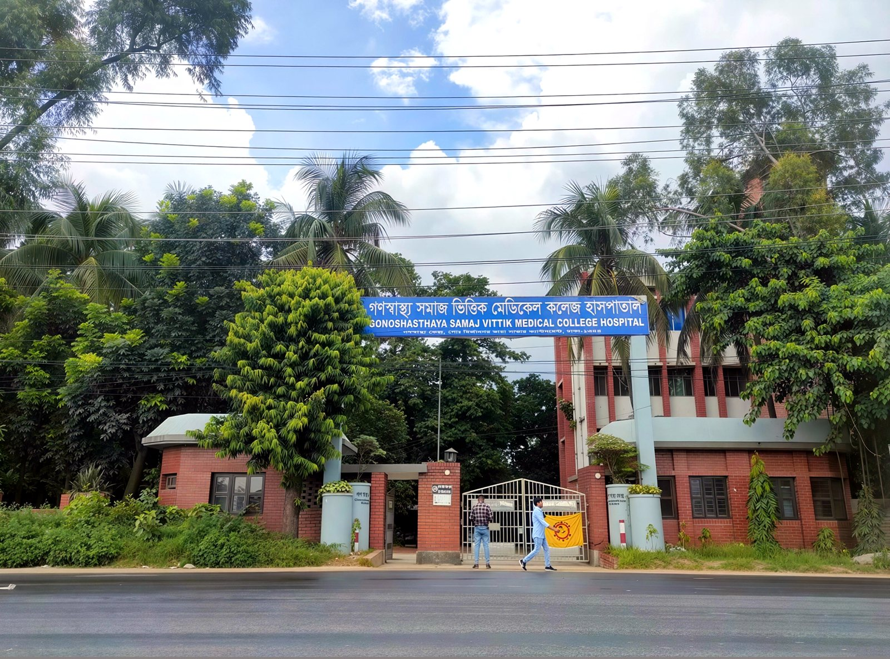

আমাদের সম্পর্কে — হাসপাতাল সম্পর্কে
এই সাইটটি গণস্বাস্থ্য সমাজ ভিত্তিক মেডিকেল কলেজ হাসপাতালের — রোগীসেবার হাসপাতালের সাইট।
হাসপাতালের ইতিহাস গণস্বাস্থ্য কেন্দ্রের (জিকে) সঙ্গে জড়িত। ১৯৭১ সালে মেলাঘর, ত্রিপুরায় ৪৮০ শয্যার বাংলাদেশ ফিল্ড হাসপাতাল পরিচালিত হয়েছিল। ১৯৭২ সালে সাভারে গণস্বাস্থ্য কেন্দ্র আসে এবং সাভার হাসপাতাল জিকের কমিউনিটি-ভিত্তিক স্বাস্থ্যসেবার রেফারেল হাসপাতাল হিসেবে কাজ করে।
গণস্বাস্থ্য কেন্দ্রের কমিউনিটি-ভিত্তিক সেবার ধারা থেকে সাভার হাসপাতাল কাজ করে — সাধারণ মানুষের জন্য সহজ, কম খরচে সেবা দেওয়ার লক্ষ্য নিয়ে।

ইতিহাস
1971
মেলাঘর, ত্রিপুরায় ৪৮০ শয্যার বাংলাদেশ ফিল্ড হাসপাতাল — মুক্তিযোদ্ধাদের চিকিৎসা।
1972
সাভারে গণস্বাস্থ্য কেন্দ্র আসে; সাভার হাসপাতাল জিকের কমিউনিটি-ভিত্তিক স্বাস্থ্যসেবার রেফারেল হাসপাতাল হিসেবে কাজ শুরু করে। হাসপাতালটি ১৯৭২ সালে প্রতিষ্ঠিত, ২৫০ শয্যার হাসপাতাল।
ডা. জাফরুল্লাহ চৌধুরী সম্পর্কে
ডা. জাফরুল্লাহ চৌধুরী (২৭ ডিসেম্বর ১৯৪১ – ১১ এপ্রিল ২০২৩) ছিলেন গণস্বাস্থ্য কেন্দ্রের প্রতিষ্ঠাতা এবং বাংলাদেশের জনস্বাস্থ্য আন্দোলনের অগ্রদূত। ১৯৭১ সালে মুক্তিযুদ্ধের সময় তিনি ও তাঁর সহকর্মীরা ত্রিপুরার মেলাঘরে ৪৮০ শয্যার বাংলাদেশ ফিল্ড হাসপাতাল পরিচালনা করেন, যেখানে আহত মুক্তিযোদ্ধাদের চিকিৎসা দেওয়া হয়। ১৯৭২ সালে তিনি সাভারে গণস্বাস্থ্য কেন্দ্র প্রতিষ্ঠা করেন — সাধারণ ও দরিদ্র মানুষের জন্য সহজলভ্য স্বাস্থ্যসেবা দেওয়াই ছিল তাঁর জীবনের লক্ষ্য, তাই তাঁকে ‘গরিব মানুষের ডাক্তার’ বলা হতো। ১৯৮২ সালে বাংলাদেশের জাতীয় ওষুধ নীতি প্রণয়নেও তাঁর গুরুত্বপূর্ণ ভূমিকা ছিল।
তাঁর কাজের স্বীকৃতি হিসেবে তিনি পেয়েছেন দেশের সর্বোচ্চ বেসামরিক সম্মান স্বাধীনতা পুরস্কার (১৯৭৭), রামন ম্যাগসেসে পুরস্কার (১৯৮৫) এবং রাইট লাইভলিহুড পুরস্কার (১৯৯২)। মৃত্যুর পর ২০২৬ সালে তাঁকে আবারও স্বাধীনতা পুরস্কার দেওয়া হয় — সমাজসেবা বিভাগে, মরণোত্তর। ২০২৬ সালের ৫ মার্চ মন্ত্রিপরিষদ বিভাগ নাম ঘোষণা করে এবং ১৬ এপ্রিল ২০২৬ ঢাকার ওসমানী স্মৃতি মিলনায়তনে অনুষ্ঠানে তাঁর পক্ষে তাঁর ছেলে বারিশ হাসান চৌধুরী পুরস্কার গ্রহণ করেন। একই বছর গণস্বাস্থ্য কেন্দ্রও প্রতিষ্ঠান হিসেবে স্বাধীনতা পুরস্কার পায়। তিনি ১১ এপ্রিল ২০২৩ সালে ঢাকার গণস্বাস্থ্য নগর হাসপাতালে ৮১ বছর বয়সে মৃত্যুবরণ করেন। তাঁকে সাভারে গণস্বাস্থ্য কেন্দ্র প্রাঙ্গণে সমাহিত করা হয়। গণস্বাস্থ্য সমাজ ভিত্তিক মেডিকেল কলেজ হাসপাতাল তাঁর সেই স্বপ্ন ও আদর্শকে বহন করে চলেছে — সবার জন্য স্বাস্থ্যসেবা।
মিশন ও ভিশন
শীঘ্রই আসছে — হাসপাতালের মিশন ও ভিশন হাসপাতাল থেকে নিশ্চিত হওয়ার পর এখানে বসবে।
হাসপাতালের সুবিধাসমূহ
শীঘ্রই আসছে — হাসপাতালের সুবিধার চূড়ান্ত তালিকা হাসপাতাল নিশ্চিত করার পর এখানে বসবে।